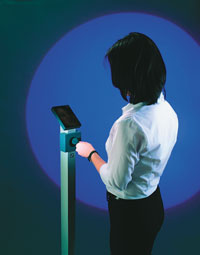
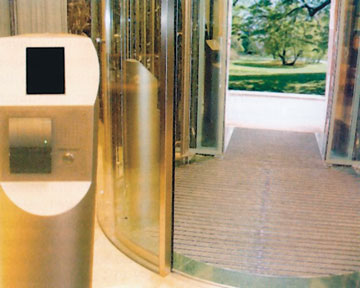
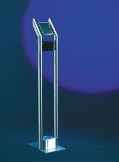

Андрей Борзенко
Биометрические признаки - это четкие, индивидуальные, биологически обусловленные характеристики каждого человека. В принципе не существует двух людей с одинаковыми биометрическими признаками. Примерами биометрических методов идентификации могут служить анализ отпечатков пальцев, геометрической формы рук, узора радужной оболочки или сетчатки глаз, расположения кровеносных сосудов, термического образа, лица, голоса, динамики подписи, ритма работы на клавиатуре и т. д. Стоит отметить, что все они очень сильно зависят от целевой установки и области применения. На сегодня только три биометрических метода уже доказали свою практичность: распознавание по отпечаткам пальцев, радужной оболочке или сетчатке глаз и по чертам лица.
Еще не так давно системы, использующие биометрические методы идентификации, можно было встретить только в научно-фантастических книгах или фильмах. Современная биометрия началась фактически с применений в целях контроля доступа в середине 70-х годов прошедшего столетия. Первые биометрические системы предоставляли довольно высокую степень безопасности только за счет высокой стоимости входящих в них биометрических устройств. Появление в последние годы недорогих микропроцессоров и передовой электронной техники для работы с изображением намного снизило стоимость и увеличило точность биометрических устройств.
Не секрет, что управление работой организации во многом сводится к предотвращению причин, препятствующих выполнению ее функций. Одна из таких причин - нарушение полномочий доступа на территории объектов или к источникам конфиденциальной информации и вычислительным ресурсам организации. Чтобы разграничить доступ сотрудников и клиентов организации на ее объекты или к информации, представляющей определенную значимость, существуют специальные автоматизированные системы. Сегодня многие учреждения частично или полностью используют в подобных системах биометрию.
Вообще говоря, любая система контроля доступа основана на идентификации или аутентификации абонентов (или групп абонентов) этой системы. Как уже отмечалось, существует ограниченное, хотя и достаточно большое количество характерных свойств и признаков определенной личности, которые можно использовать для ее идентификации. Цель любой системы контроля доступа заключается в том, чтобы предоставить людям, имеющим соответствующие полномочия, возможность прохода в определенные зоны. Как правило, этого можно достичь только путем применения биометрических устройств.
Основная функция любого биометрического устройства - распознавание личности. Контроль доступа требует не только идентификации человека; система может также отпирать дверь, разрешать или запрещать доступ в зависимости от времени суток и, при необходимости, приводить в действие сигнал тревоги. Биометрическая технология может осуществлять эти задачи несколькими способами.
По сравнению с традиционными биометрические методы идентификации личности имеют ряд преимуществ, а именно:
- биометрические признаки очень трудно фальсифицировать;
- в силу уникальности биометрических признаков достоверность идентификации очень высока;
- биометрический идентификатор нельзя забыть, как пароль, или потерять, как пластиковую карточку.
Характеристики биометрических систем
Наиболее важный фактор успеха биометрической системы - это ее одобрение пользователями. Оно, в свою очередь, зависит от нескольких факторов. Во-первых, устройство не должно вызывать у пользователя чувства тревоги или дискомфорта. Возможно, это субъективный показатель, но он весьма важен для понимания проблем пользователей. Если люди боятся использовать устройство, то, скорее всего, они будут обращаться с ним неправильно и в результате не получат доступа. Во-вторых, биометрическое устройство должно быть простым в использовании. Клиентам нравятся устройства, с которыми просто работать. В-третьих, биометрическое устройство должно функционировать четко и точно. Если биометрическая система работает так, как надо, она делает две вещи: не позволяет войти "плохим" и разрешает вход "хорошим". Однако ни одно устройство не может быть абсолютно совершенным, и биометрические системы - не исключение, они могут допустить ошибку: впустить "плохих" или закрыть вход для "хороших". Возможность таких ошибок выражается уровнем ложных приемов и ложных отказов.
Показателями надежности биометрических систем могут служить вероятности ошибок первого и второго рода. Ошибки первого рода определяют вероятность ложного отказа (FRR, False Rejection Rate) и возникают при отказе в доступе легальному пользователю системы. Ошибки же второго рода показывают вероятность ложного допуска (FAR, False Acceptance Rate) и появляются при предоставлении доступа постороннему лицу. FRR и FAR связаны обратной зависимостью. Современные биометрические системы имеют очень большой разброс этих характеристик.
Биометрическую систему также можно характеризовать уровнем равной вероятности ошибок первого и второго рода (EER, Equal Error Rates) -- точкой, в которой вероятность ошибки первого рода равна вероятности ошибки второго рода. На основании EER можно делать выводы об относительных достоинствах и недостатках разных биометрических методов. Чем ниже уровень EER, тем лучше. Например, уровень в один процент означает, что из 100 попыток опознания человек будет ошибочно отвергнут или ошибочно узнан один раз.
Еще один параметр, о котором стоит задуматься при выборе и установке биометрической системы, - ее пропускная способность. По сути, это время, которое требуется человеку для взаимодействия с данным устройством.
Выбор системы контроля доступа - сложный вопрос. При этом требуется проанализировать характер возможных угроз, разработать модель потенциального "шпиона", определить требования к системе безопасности, изучить рынок предлагаемых систем и т. д. Делая выбор системы контроля доступа на основе биометрических методов идентификации личности, нужно быть осторожным с официально публикуемыми данными об уровнях ошибок. Поскольку они определяются методикой и длительностью тестирования, объемом и характером статистических выборок, а применение биометрических устройств может быть весьма разнообразным, то уровни ошибок от реализации к реализации могут меняться в широких пределах.
Помимо декларируемой надежности и цены необходимо учитывать и такие факторы, как совместимость с существующими системами. Рассматривая конкретную систему контроля доступа к вычислительным ресурсам, нужно убедиться в корректности ее работы с имеющимся оборудованием и ПО, а также проанализировать возможность ее интеграции в уже установленные системы защиты.
Кроме того, надо понять, насколько приемлема система для пользователей, которые будут с ней сталкиваться. Под приемлемостью для пользователя в данном случае понимается его отношение к процессу аутентификации или идентификации. Так, процедура взятия отпечатков пальцев может рассматриваться как нечто унизительное, вызывая ассоциации с применением ее в криминалистике. С этой точки зрения идентификация по параметрам руки выглядит более безобидной. Немаловажный параметр практически любой системы - скорость проведения регистрации и верификации абонентов. Большинство предлагаемых систем выполняют аутентификацию и/или идентификацию практически в реальном масштабе времени. Продолжительность регистрации нового абонента от нескольких десятков секунд до нескольких минут также приемлема, поскольку эта процедура выполняется только однажды.
Современная систем должна быть многоуровневой и представлять собой комплекс технических и административных решений. Наилучшие результаты получаются, когда опознание личности проводится и биометрическими, и традиционными методами. Чем больше данных, тем больше потенциал для развития систем безопасности, и биометрия здесь оказывается оптимальным решением.
В соответствии с ростом числа приложений, где возможно применение биометрических технологий, растет и объем производства биометрических устройств, что позволит существенно снизить цены на системы такого рода уже в ближайшее время. Кроме того, уменьшению их стоимости способствует и снижение цен на компьютерные услуги.
Распознавание лица
Один из новых способов, завоевавший значительную популярность, -- распознавание облика. Люди легко узнают друг друга по лицам, но автоматизировать подобное опознание вовсе не легко. Большая часть работ в этой области была посвящена тому, чтобы получить изображение при помощи фотографии или видеокамеры. Только в США и Германии над технологиями опознавания по чертам лица работали несколько десятков компаний, которым были выделены правительственные гранты. Первоначально разработки предназначались для спецслужб, но со временем результаты этих исследований разрешили применять и в коммерческих целях. В результате на рынке появилось некоторое количество систем распознавания (правда, не все из них оказались пригодными на практике).
Технология распознавания позволяет сканировать человеческие лица в режиме реального времени. Видеокамера подключается к терминалу, и система определяет, соответствует ли лицо в кадре фотографиям из базы данных. Принцип работы системы распознавания по лицу основан на специальном алгоритме оцифровки изображений, позволяющем выбирать на кадрах лицо человека и оцифровывать его, выделяя большое количество параметров (так называемые базовые точки - скулы, цвет и форма глаз, ширина переносицы, губ и т. д.). В результате каждое лицо описывается уникальным набором параметров, причем с некоторым избытком. Для идентификации с высокой степенью точности требуется не более 40 характеристик, тогда как система обычно задает около 2 тыс. оценочных параметров. Это обеспечивает высокую надежность опознания независимо от поворота головы, наличия очков, косметики. В принципе для надежного опознания человека программе достаточно всего несколько десятков базовых точек. Фотография и цифровое описание лица заносятся в базу данных, с которой впоследствии сравнивается распознаваемое лицо.
Вообще говоря, на рынке систем автоматического распознавания лица господствуют два типа систем. Первые базируются на статистическом методе: на основе набора биометрических данных и их обработки формируется некий электронный образец как уникальное в своем роде число, относящееся к конкретной личности. Такой тип систем достаточно широко распространен, но идентификация с их помощью, как правило, не очень надежна.
Методы, относящиеся ко второму типу, близки к человеческому видению проблемы распознавания. Система самообучаема и робастна в отношении изменчивости лица - таких факторов, как возраст, наличие усов или бороды, очков. Для идентификации и верификации можно использовать и старые фотографии. Технология в принципе позволяет работать даже с рентгеновскими снимками. Приемлемость такого принципа пока не удалось превзойти, так как он моделирует "человеческий подход": один человек разглядывает лицо другого, чтобы его идентифицировать. Как и анализ личной подписи, определение идентичности по фотографии в паспорте относят к наиболее доступному и признанному методу распознавания личности.
Для защиты данных и информации также предпочтительно использовать системы распознавания лица. Кроме того, контроль лица выполняется с определенным комфортом: он бесконтактен и обеспечивает удобную и быструю обработку данных.
В качестве единственного биометрического приложения метод распознавания лица можно использовать в разных областях. Помимо сравнения с содержанием баз данных цифровых фото и классического контроля доступа (верификации), с помощью этого метода можно бесконтактно распознавать людей и в негрупповых сценариях. Распознавание лица неэффективно только тогда, когда значительные изменения, например, вследствие несчастного случая, делают невозможным даже человеческую визуализацию.
Использование любого биометрического признака имеет свои преимущества и недостатки. Поэтому ни в коем случае нельзя ожидать, что какой-либо отдельный метод добьется приоритетного признания. Большинство экспертов сходятся в том, что пользователь в зависимости от постановки задачи должен сам сделать выбор между тремя методами распознавания: по отпечаткам пальцев, радужной оболочке глаза или лицу.
В отличие от других биометрических технологий (идентификация по отпечаткам пальцев, радужной оболочке глаза или по голосу) система распознавания по чертам лица не требует непосредственного контакта с человеком, личность которого устанавливают. Не нужно просить человека оставлять отпечатки пальцев, смотреть в объектив или произносить какие-то слова.
|  | Идентификация персоны по лицу на пункте контроля доступа.
|
Распознавание лица - это, пожалуй, единственный биометрический способ идентификации персон, для применения которого не требуется специальная техника. Именно в лицо мы узнаем родных и близких, а не прибегаем, скажем, к сличению отпечатков пальцев или радужной оболочки. Кроме того, использование фотографии для удостоверения личности владельца - традиционная рутина уже на протяжении нескольких десятилетий. Наверное, каждому знаком процесс предъявления пропуска вахтеру и внимательный взгляд в лицо посетителя, а компьютер лишь автоматизирует процедуру. Эти факторы в значительной степени упрощают внедрение распознавания лица в современные комплексы безопасности, позволяя избежать конфликта с пользователями и риска быть отвергнутыми.
Метод распознавания лица - это единственный биометрический способ идентификации персон и с точки зрения многоцелевого применения. В отличие от других биометрических методов, применимых только для контроля доступа или сравнения в базе данных, технология распознавания образа позволяет детектировать (находить) лицо человека в видеокадре, либо для последующего сравнения с базой данных, либо наоборот, чтобы скрыть его от случайного зрителя. Благодаря встроенным инфракрасным излучателям компьютер легко распознает каучуковую маску как муляж, имитирующий лицо. Наблюдаемый объект должен иметь человеческую кожу, естественную мимику и быть "живым", в противном случае срабатывает звуковой сигнал предупреждения.
Распознавание по чертам лица происходит на расстоянии, незаметно, не привлекая внимания человека. С точки зрения служб безопасности и спецслужб это несомненное преимущество. Правозащитники же полагают, что применение подобных технологий нарушает право человека на анонимность. Впрочем, производители технологий распознавания подготовились к протестам и позаботились о правах личности. Если система не находит совпадений с лицами в базе данных, то в ее памяти не остается никакой информации о человеке, который появлялся перед камерой. Производители также заявляют, что в системах применяются стандартные камеры видеонаблюдения. Общество давно привыкло к этим камерам, использование которых уже регулируется законодательством. В развитых странах в магазинах принято предупреждать о том, что в помещении ведется наблюдение. А есть ли терминал для опознавания в кабинете службы безопасности или нет - какое, мол, до этого дело законопослушному посетителю.
Основные потребители подобных биометрических систем - не только службы безопасности (предприятий, аэропортов, супермаркетов, казино, банков), но и государственные учреждения (министерства, силовые ведомства, специальные структуры).
|  | Здесь проходят контроль австрийские парламентарии (вход в здание парламента в Вене).
|
В России технология распознавания человека по лицу появилась недавно, но интерес к ней довольно высок. В частности, в нашей стране системами распознавания занимается инженерная корпорация "Солинг" (http://www.soling.ru). Многолетний опыт работы на рынке позволяет успешно адаптировать зарубежное оборудование к российским условиям и требованиям, внедрять новые технологии в создаваемые и уже существующие комплексы безопасности. Готовые, проработанные решения существуют в настоящее время на базе оборудования ZN Vision Technologies AG (Германия).
|
Практика распознаванияТот факт, что метод автоматизированного распознавания клиента по лицу уже зарекомендовал себя на практике, не ставится под сомнение. В числе пользователей данной технологии - такие известные "распознаваемые лица", как Deutsche Bank, Европейский центр ядерных исследований (CERN), российский Центробанк, Национальный банк Литвы, корпорации Microsoft и Siemens, Федеральная типография (Германия). Атомные электростанции и сверхсекретные объекты также охраняются с помощью новой технологии. Первая электронная база данных цифровых фотографий с системой автоматического распознавания лица, созданная в ZN Vision Technologies, позволила многочисленным полицейским службам в Германии, Польше и США оптимизировать следственные действия и добиться качественного улучшения мер по розыску преступников. Интеллектуальный современный видеоконтроль гарантирует безопасность и защиту в местах скопления людей, так как позволяет с помощью информацию баз данных обнаружить известных и опасных персон в режиме реального времени.
|
Технология и решения ZN Vision Technologies
Компания была основана в 1993 г. на базе Рурского университета (Бохум, Германия) и Южно-Калифорнийского университета (Лос-Анджелес, США). С того времени Центр нейроинформатики (Zentrum fur Neuroinformatik) превратился в фирму ZN Vision Technologies AG (http://www.zn-ag.com). В 1996 г., через три года после основания, компания привлекла к себе внимание общественности, получив премию немецкой промышленности за инновации. Последующие награды тоже не заставили себя ждать. В 1998 г. профессор-инженер Вернер фон Зеелен и профессор Кристоф фон дер Мальсбург были награждены премией Карла Хайнца Беккуртса, а в 2000 г. фон дер Мальсбург был отмечен Керберовской европейской научной премией.
Основоположник методаКристоф фон дер Мальсбург с 17 лет разрабатывал теорию, позволяющую моделировать работу головного мозга. Впрочем, и тогда, когда он уже возглавлял институт в Геттингене, одновременно работая при университете в Лос-Анджелесе в области исследований работы головного мозга, многие коллеги фон дер Мальсбурга не воспринимали его идеи всерьез. Свою теорию ученый хотел доказать, пытаясь "научить" компьютеры видеть. Свой шанс фон дер Мальсбург получил в начале 90-х годов, когда правительство земли Северный Рейн - Вестфалия распределяло научный бюджет по Объединенной Европе. В то время фон дер Мальсбург преподавал в Бохумском университете. Вместе со своим коллегой, профессором Вернером фон Зееленом, он смог начать практические разработки.
|
ZN Vision Technologies, имеющая в штате всего несколько десятков сотрудников, - одна из ведущих компаний в области автоматического наблюдения. Способность системы наблюдения обучить компьютеры интерпретировать и понимать изображения и события, снятые обычными камерами, базируется на математических методах, которые воспроизводят зрительное восприятие, свойственное человеку. ZN Vision Technologies использует технологию искусственного наблюдения там, где нужно "автоматизировать" анализ увиденного, чтобы повысить эффективность и качество. Сегодня эта технология используется не только в охранных системах, но и в медицинских технологиях. Используя патентованный метод распознавания человека по чертам лица, компания создает продукты, предназначенные для охраны зданий, для поиска людей в фотоархивах и для "разумного" видеонаблюдения. В области здравоохранения полученный врачами фотоматериал обрабатывается и автоматически сравнивается с базой фотоданных по изучаемой проблеме, например, с целью диагностики раковых заболеваний кожи. В сотрудничестве с более чем 15 исследовательскими институтами и 30 известными компаниями ZN Vision Technologies разрабатывает новые продукты в области фотографии, контроля качества в промышленности, в области автомобильной индустрии, маркетинга, продвижения продаж и увеличения изображений.
На сегодняшний день компания - признанный технологический лидер в разработке систем безопасности. На разработку новых технологий она потратила более 500 человеко-лет и более 30 млн евро. Кроме этого, ZN Vision Technologies постоянно занимается поиском новых сфер применения технологии и работает над расширением возможностей ее практического применения. Технологическое лидерство ZN Vision подтверждено многочисленными национальными и международными патентами и сотрудничеством с ведущими исследовательскими институтами и компаниями. В их число входят, например, фирмы Kaba, Interflex и Государственная типография, занимающие ключевые позиции в области интеграции систем безопасности.
Основываясь на технологии системного наблюдения, ZN Security (подразделение компании ZN Vision Technologies AG), предлагает продукты для автоматической идентификации и верификации людей. Разработанные компанией системы ZN-Face, ZN-Phantomas и ZN SmartEye выступают как основные составляющие при решении задач контроля доступа и аналитического видеонаблюдения.
ZN-Face
Система ZN-Face сочетает в себе новейшие компьютерные разработки с системой контроля доступа, основанной на автоматическом распознавании лиц. Она не только предлагает максимально возможную защиту зон безопасности, например, в банках, на промышленных и военных объектах, в аэропортах и на электростанциях, но может быть использована для любого ограничения доступа, например, на проходных фитнес-студий, клубов и т. д. Системе известны лица всех владельцев магнитных или чип-карточек. ZN-камера делает снимок человека, стоящего на рубеже контроля, и проверяет его в считанные доли секунды. Люди, системе незнакомые, доступа не получают. Специально разработанный модуль оптического фильтра и функция контроля за живым лицом предотвращает любую попытку обмана путем применения фотографий или масок. Система записывает все события, происходящие на контролируемом объекте, а работник службы безопасности в любое время имеет доступ ко всем данным и результатам идентификации.
С 1996 г. создавались различные версии системы, в настоящее время разработано третье поколение -- ZN-Face III, в виде как стандартной системы, так и адаптируемой к специальным требованиям заказчика (например, для одного и для неограниченного количества пропускных пунктов).
|  | Консоль системы ZN-Face.
|
Сегодня система контроля доступа ZN-Face - наиболее продаваемая в Европе. Первоначально разработанная для атомных электростанций, она теперь применяется как европейским отделением корпорации Microsoft в Германии, так и спортивными клубами в Голландии. В свое время германское ведомство информационной безопасности (Bundes amt fur Sicherheit in der Informationstechnologie, BSI) по окончании многопланового тестирования всех имеющихся на рынке биометрических систем признало соответствующими всем требованиям к обеспечению безопасности лишь продукт Iris Scan, основанный на идентификации по роговице глаза, и ZN-Face, основанный на идентификации по чертам лица.
ZN-Phantomas
Это компьютеризованная база фотоданных, которая может автоматически сравнивать и идентифицировать лица. Для сравнения годится фотография, фоторобот, рисунок или кадр, полученный при видеосъемке. ZN-Phantomas проводит поиск среди сохраненных в памяти изображений, используя систему распознавания лиц, созданную по образу работы человеческого мозга на базе технологии органического видения. Скорость работы системы позволяет просматривать 10 тыс. изображений за три минуты.
Многочисленные тесты показали, что квота успешной идентификации составляет практически 100% и не снижается при изменении внешности очками, бородой, прической и т. п. либо по причине старения человека. Таким образом, система оказывает действенную помощь подразделениям полиции в их оперативно-розыскной деятельности для идентификации и поимки преступников. Благодаря ZN-Phantomas становится более эффективной работа со свидетелями, так как можно исключить утомительный бессистемный поиск подозреваемого в фототеке. С 1997 г. ZN-Phantomas используется департаментами полиции в Европе и Америке и доказала свою эффективность, вычислив в Калифорнии двойного убийцу в полицейской базе данных путем сравнения с фотороботом. Помимо розыска преступников, система применяется для поиска пропавших людей и опознания жертв.
Стоит отметить, что система может работать со всеми SQL-базами данных, использующими ODBC-протокол (Oracle, Sybase SQL, DB2, Informix).
ZN-SmartEye
Это система видеонаблюдения с функцией идентификации людей, которой требуется всего несколько секунд, чтобы сравнить изображение лица человека с данными, содержащимися в емкой базе данных в "постоянной" памяти системы. Как только наблюдаемый человек идентифицируется с изображением из базы данных, на экране выводится сообщение и может, например, раздаться сигнал тревоги, чтобы офицер безопасности немедленно принял меры к задержанию. В то время как человеческое внимание начинает ослабевать после нескольких минут наблюдения за изображением на мониторе, ZN-SmartEye ведет наблюдение, не зная усталости, 24 часа в сутки. В частности, ZN-SmartEye защищает зоны безопасности и позволяет проводить скрытое наблюдение за посетителями в общественных местах, аэропортах, железнодорожных вокзалах, складах, магазинах, клубах или на спортивных аренах. Она может предупредить о визите высокопоставленных гостей или дать знать о появлении мошенников в казино или хулиганов на стадионах.
В настоящее время ZN Vision Technologies работает над новыми решениями, в которых применялись бы опробованные алгоритмы нечеткой логики (например, узнавание регистрационных знаков автомобиля). В частности, в сотрудничестве с Государственной типографией компания намерена разработать для крупных корпораций комплексные решения, позволяющие проводить авторизацию доступа или установление личности в большой массе людей быстрым, относительно недорогим и надежным способом.
|
Микросхема для распознавания лицВ компании STMicroeletronics (http://www.st.com) разрабатывается интегральная схема, ускоряющая исполнение алгоритмов распознавания лиц. Она содержит программируемый процессор Xtensa 200 МГц компании Tensilica, соединенный с программируемой логической матрицей (ПЛМ). Матрица реализует расширения языка С, на котором программируется Xtensa, используя специальные возможности процессора. Применение расширений позволяет ускорить обработку почти на порядок. ПЛМ также выполняет в микросхеме функции ввода-вывода. Опытный образец интегральной схемы изготовлен с учетом проектных норм 0,18 мкм.
|